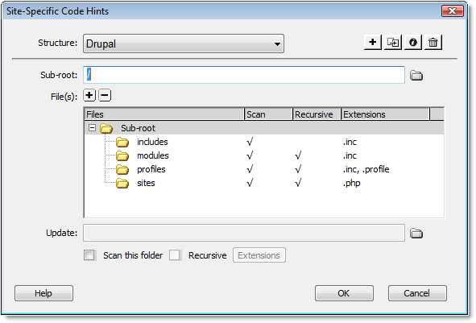

Using the Site-Specific Code Hints interface you can create the configuration file needed to display code hints when working in Code View of Dreamweaver.
Note: The code hints are created specifically for the site selected in the Dreamweaver Files panel. In order for the code hints to display, the page you are working on must be saved to the currently selected site.
When first opened, the Site-Specific Code Hints dialog will scan your site to determine the framework that is being used. Dreamweaver includes 3 predefined frameworks that you can work with, Drupal, Joomla, and Wordpress.
Note: If Drupal or Joomla is selected from the Structure menu, there will be an additional path included to a file within your Dreamweaver configuration folder. This is required when using these frameworks.
The four buttons at the top of the dialog allow you to do the following.
Note: The default structures cannot be deleted.
